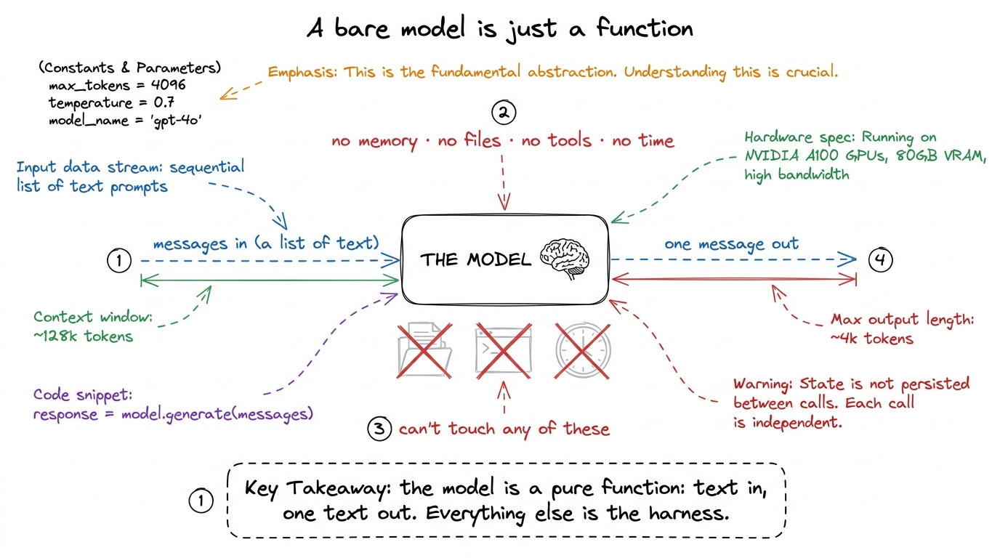
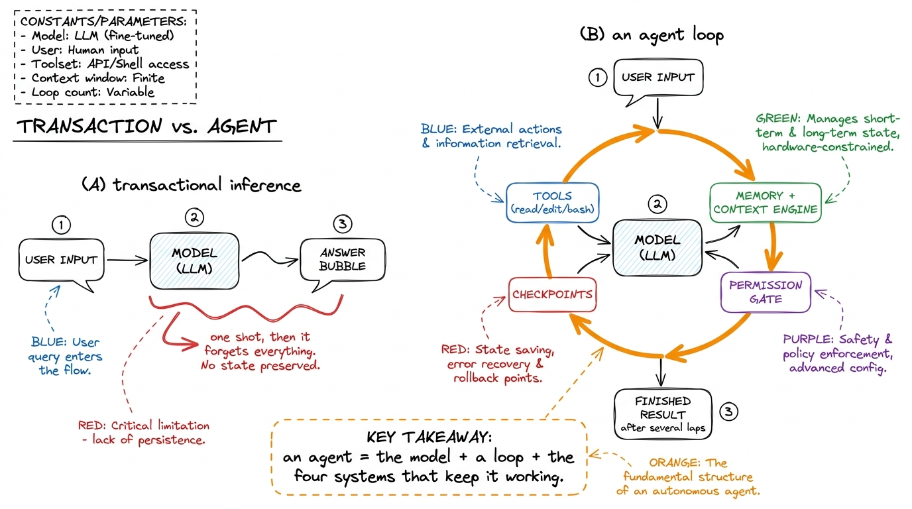
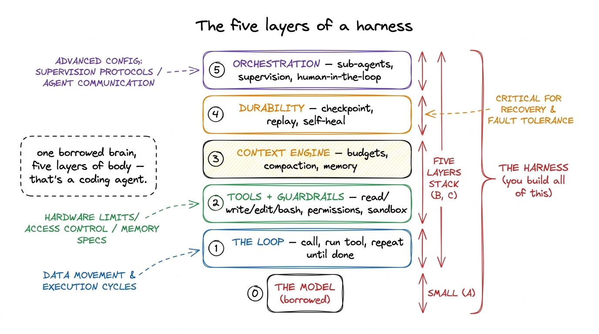

What is a harness?
Here is a sentence that sounds like a trick until you sit with it: Claude Code is not a model. Neither is Cursor, neither is pi, neither is the coding agent you are about to build. The model — the thing that predicts the next token — is a component inside each of them, and often the smallest interesting part. The thing that makes them feel like a colleague instead of an autocomplete is everything wrapped around the model. That wrapper has a name now, and learning to build it is what this whole book is about. The wrapper is called a harness.
Let me convince you the distinction is real, because everything downstream depends on you feeling it in your bones, and then let me show you the five pieces every harness is made of.
Start from zero: what a bare model actually gives you
Strip away all the tooling and a large language model offers exactly one primitive: you hand it a list of messages, and it hands you back one more message. That's it. It is a function — text in, text out — with no memory of the last call, no ability to touch a file, no way to run a command, no notion that time is passing. Call it a thousand times and it is a thousand unrelated strangers, each seeing only what you chose to type into that one call.

figure rendering · A bare model is a stateless function — text in, one text out. It cannoThis is a wonderful thing and a completely useless thing at the same time. Wonderful, because that single primitive contains astonishing capability. Useless, because you wanted an agent that reads your codebase, edits three files, runs the tests, notices they fail, fixes the bug, and remembers the whole time what you asked it to do. None of that is in the function. All of it has to be built around the function.
The gap: transactional inference vs. a real agent
Watch what happens the first time you try to close that gap the obvious way. You write a little script: read the user's request, call the model, print the answer. It works for "explain this regex." Then you ask it to "fix the failing test," and immediately you need things the script doesn't have.1 This is the exact moment, in every "build an agent" tutorial, where a two-line script quietly grows into a system. The rest of this book is a guided tour of what it grows into, built deliberately instead of by accident.
The model says "let me look at the test file" — but a model can't look at files, so you need to give it a tool and run it. It reads the file, proposes an edit — but a model can't write files either, so you run that too, and now you'd better ask the user before overwriting their code. It wants to run the tests — that's a shell command, which could be rm -rf in disguise, so you need a permission gate and ideally a sandbox. The conversation gets long, so you need to decide what stays in the model's limited context and what gets summarized away. Halfway through, the process crashes — and you need to have been checkpointing, or all that work is gone.
Every single one of those "you needs" is a piece of the harness. The bare model gave you transactional inference: one question, one answer, no continuity. An agent is a loop of many such transactions, held together by machinery that remembers, acts, protects, and recovers. That machinery is the product.

figure rendering · The leap from a one-shot transaction to an agent is a loop plus the syThe three engineering disciplines, so you never confuse them
People throw three phrases around as if they were the same craft. They are not, and keeping them straight will make you sharper than most practitioners.2 We give this its own chapter — prompt vs context vs harness engineering — because the boundary is the single most clarifying idea in the field. Here is the one-paragraph version.
Prompt engineering is what you say: crafting a single instruction so one completion comes out well. Necessary, transactional, and nowhere near enough for something that runs two hundred turns. Context engineering is what the model sees each turn: deciding, every single call, which memories, files, tool results, and instructions get spent from the scarce budget of the context window. And harness engineering is what the model lives inside: the entire runtime — loop, tools, permissions, durability, orchestration — of which context engineering is just one subsystem. Prompt is a sentence. Context is a turn. The harness is the whole machine.
The five layers you will build
So what is the machine made of? Across this book — and across the five days of the workshop — you build a harness in five layers, each one giving the agent a power the bare model lacked. This is the map; keep it on the wall.

figure rendering · The five layers you build, bottom to top: the loop, tools + guardrailsLayer 1, the loop. The beating heart: call the model, see if it asked for a tool, run the tool, feed the result back, and repeat until it stops asking for work. We derive it from nothing in the agent loop from first principles, and by the end of Day 1 you have a bare harness that genuinely acts.
Layer 2, tools and guardrails. A harness that can only talk is a chatbot. We give it hands — file and shell tools defined by strict schemas — and, just as importantly, the permission gates and sandbox that keep those hands from doing damage.
Layer 3, the context engine. The context window is the scarcest resource in the whole system, and someone has to decide what fills it each turn. We build compaction so long sessions survive, and a memory layer so the agent starts each run already knowing your project.
Layer 4, durability. Real agents crash, get interrupted, and hit transient errors. We make the harness checkpoint every step so a dead process can replay instead of redo, and self-heal instead of dying on the first hiccup.
Layer 5, orchestration. Some jobs are too big for one context. We teach the harness to dispatch sub-agents under a supervisor, with a human-in-the-loop gate for the actions that shouldn't be automatic.
Stack those five layers on a borrowed model and you have exactly what Claude Code, Cursor, and pi are — and exactly what you will have built yourself by Friday.
Why build it yourself, when these already exist?
Because the harness is where the actual engineering lives, and it is the part that is yours. Models are a commodity you rent from a handful of labs; everyone has the same one. The harness is the differentiator — it decides whether your agent is safe, whether it recovers, whether it stays coherent over a long task, and whether it costs a dollar or a penny to run.3 This is why pi (pi.dev) is such an instructive object: it proves a real, capable harness can be small. You do not need a giant company to build one — you need to understand the five layers, which is the entire point of this book. Build one from scratch and you will never again look at a coding agent as magic; you will see the loop, the tools, the context machinery, and the recovery systems, and you will know exactly what each is doing.
That is the promise. In the next chapter we make the gap concrete — why "just call the API" fails — and then we start building, one layer at a time.